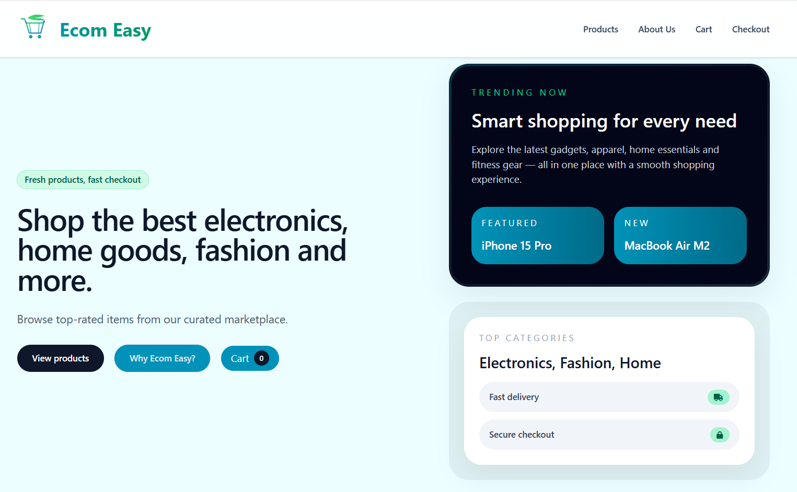

Project 01
Ecom Easy
Ecom Easy is a full-stack e-commerce project that helped me understand how a shopping experience comes together across front-end interfaces and backend systems. The project covers browsing products, adding items to a cart, and managing the flow from product selection to a cohesive purchase journey.
In practice, this meant working with product data, user interactions, component structure, and the flow of information between the interface and the database. I was able to see how backend integration, data modelling, and front-end decisions influence the overall experience for an online store.